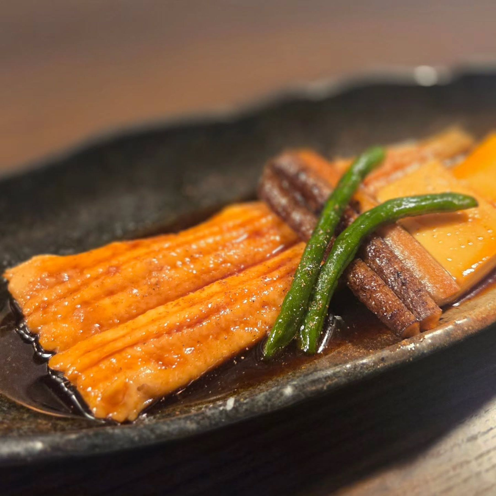
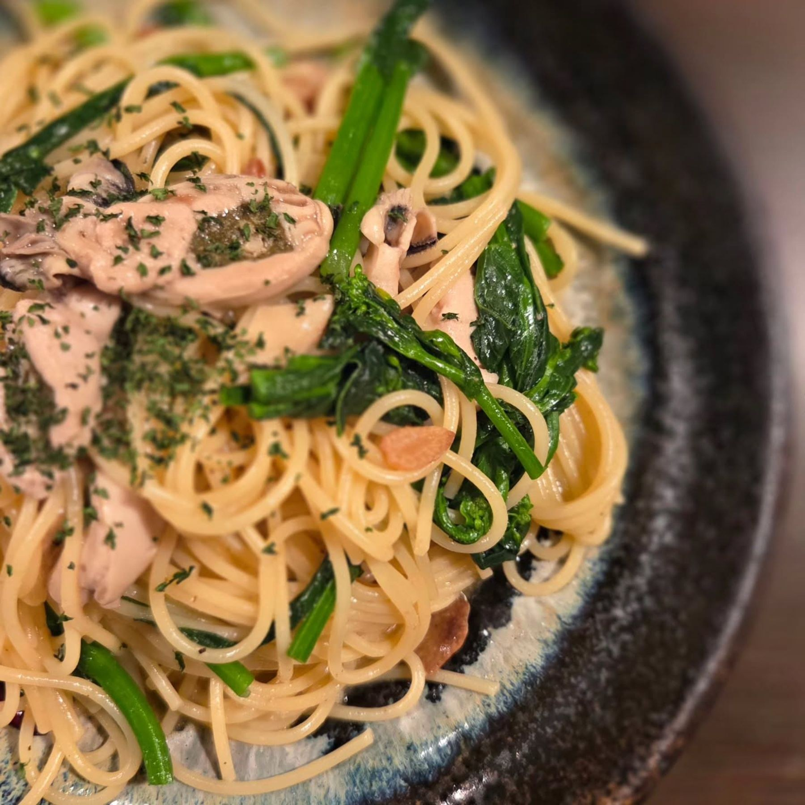
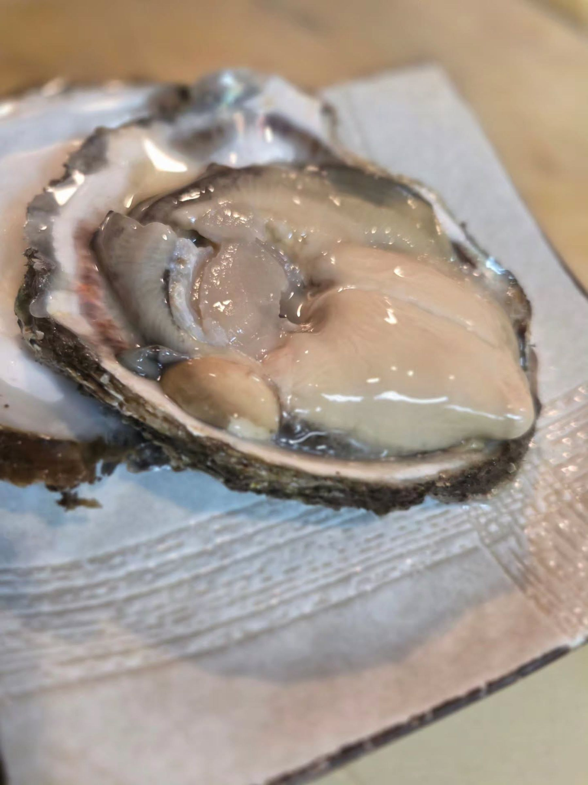
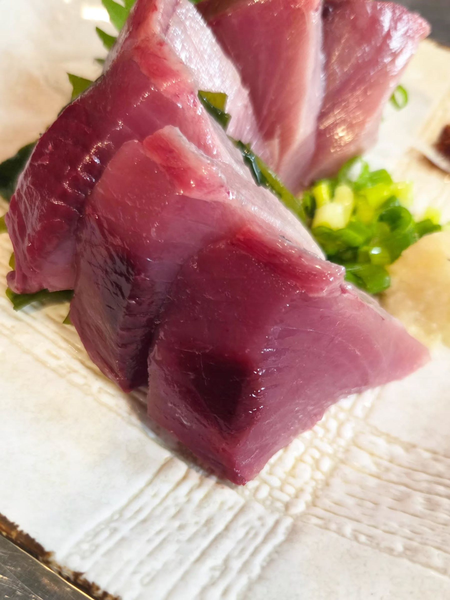
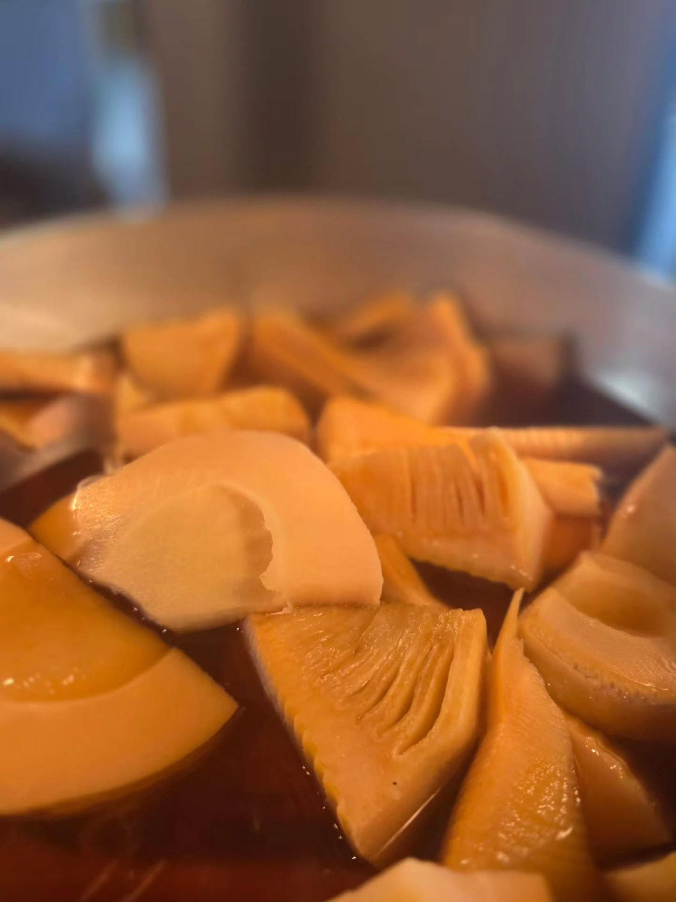
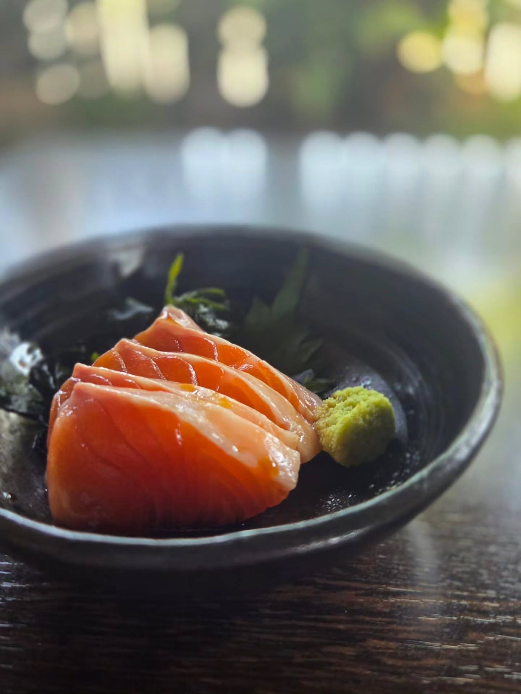
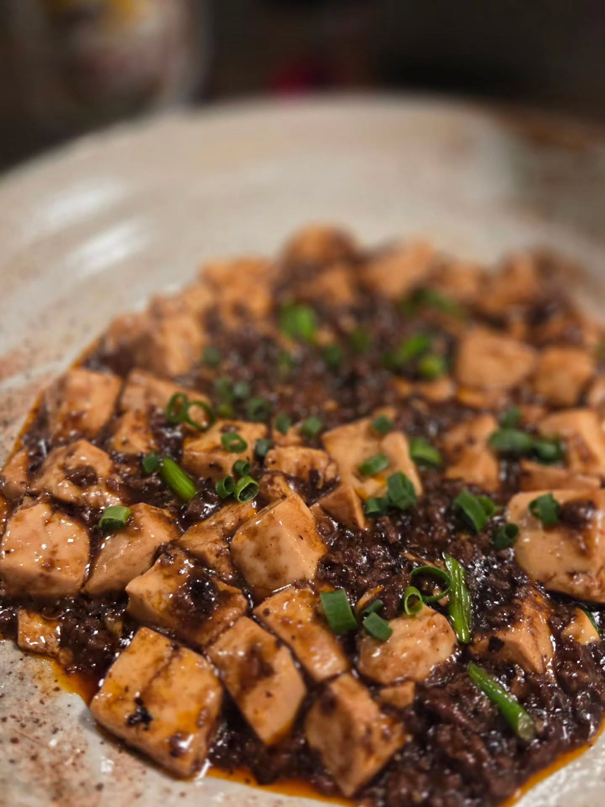
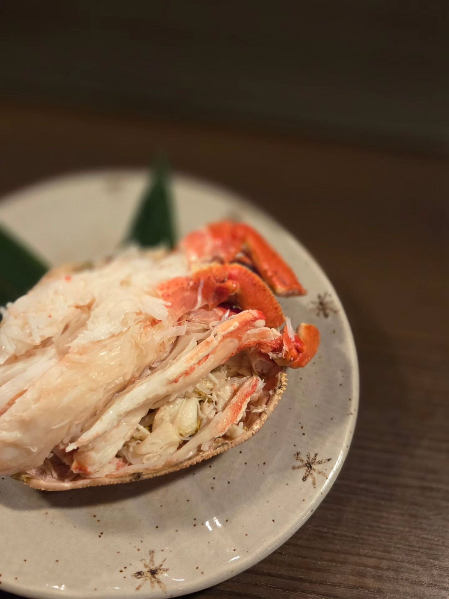

穴子の煮付け
「日本酒と共にどうぞ」と紹介されていた一皿です。
SAKE & SAKANA — KAMIFUKUOKA
その日の魚と、季節のお酒を。
上福岡の住宅街にある、酒と肴の店です。
17:00〜23:00 日曜定休
20歳未満のご入店はご遠慮いただいています
ABOUT
埼玉県ふじみ野市西、上福岡駅から歩いて7分ほどの住宅街に、2012年から続く酒と肴の店です。カウンターとテーブル席のほかに、庭の見える小上がりの掘りごたつ席があります。
お品書きは月ごとに入れ替わり、お造りにはその日に仕入れた魚が並ぶそうです。和食だけにこだわらず、パスタやポワレのような洋の一皿も、日本酒と合わせて楽しめます。
「駅周辺の飲み屋とは異なり、住宅街にあり、ゆったりとした気分で料理やお酒を味わえます。」
Googleマップのクチコミより

SAKE
日本酒はその時々で銘柄が入れ替わります。ほかにビール、焼酎、ワイン、サワー、ウイスキーがあり、ウイスキーはオフィシャルボトルのほかにボトラーズものも置かれています。
「日本酒も定番ものではなく、その時々によって置いてあるものが変わるので、日本酒好きは楽しめると思います。ウイスキーもオフィシャルボトルの他にボトラーズものもあり、他の居酒屋さんとは一線をかくします。」
Googleマップのクチコミより
これまでにお店が紹介していた銘柄
「うまい肴、美味しいお酒を飲むならここかな。」
Googleマップのクチコミより
GALLERY






SHOP INFO
| 店名 | 酒と肴 風花 |
|---|---|
| 住所 | 埼玉県ふじみ野市西2-2-1 山崎ハイツ |
| アクセス | 東武東上線 上福岡駅から徒歩7分 |
| 営業時間 | 17:00〜23:00 日により 11:30〜14:00の定食のご用意があります （実施日は月ごとに変わります） |
| 定休日 | 日曜 そのほかのお休みは月ごとに変わります |
| ご予約 | お電話・店頭のみ（17:30〜） |
| お支払い | 現金／クレジットカード VISA・Mastercard・American Express・JCB・ダイナーズクラブ・Discover |
| ご入店 | 20歳未満の方のご入店はご遠慮いただいています |
| 電話 | 049-266-5205 |
CONTACT
ご予約はお電話または店頭でのみ承っています。営業日やランチのある日、その日のおすすめは、Instagramでお知らせしています。